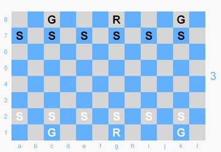
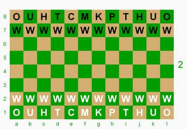
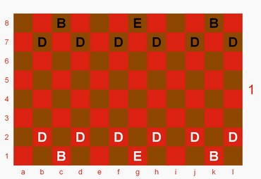

Dragonchess
Board Game Arena 官方规则文档
OVERVIEW
DRAGONCHESS is played on a 3-tier board representing the Sky above, Earth in the middle, and Underground caverns below. The boards are populated by magical creatures and mighty adventurers, each with unique powers and movement, who have united forces to vanquish the enemy king. You must capture (or checkmate) him to win.
Rules below assume knowledge of basic chess movement and capturing.
Beginning with the GOLD & WHITE / UPPERCASE player, players take turns moving one of their pieces on the board of their choice. Unless otherwise stated, movement means unimpeded movement - you may not move through or over other pieces.
Each board is layed out with a different set of denizens as described below.
TOP BOARD / SKY
Initial setup: 1 dragon, 2 griffins, 6 sylphs

DRAGON ~ The Dragon never leaves the sky but can use firebreathing to capture on earth.
MOVES / CAPTURES either like a bishop -OR- 1 space forward/backward/left/right.
SPECIAL POWER: Firebreathing
Without moving the Dragon, remove one enemy on earth that is either directly below the Dragon or on a square orthogonally-adjacent (forward/backward/left/right) to it.
The Dragon may not move AND breathe fire in the same turn!
GRIFFIN ~
Moves and captures unhindered both in the sky and on earth.
Sky: MOVES / CAPTURES 2 spaces diagonally then 1 space orthogonally outward/forward, jumping over intervening pieces.
May jump to or capture a diagonally-adjacent cell on earth.
Earth: MOVES / CAPTURES like a chess king. -OR- Returns to the sky by making an unblockable move or capture to a diagonally-adjacent square above it.
SYLPH ~
Can only move in the sky but can capture on earth and sky.
Sky: MOVES (without capturing) 1 space diagonally-forward and CAPTURES 1 space straight ahead (the opposite of a pawn). -and- CAPTURES the square directly below it on earth.
Earth: Return to the sky either by moving to the square directly above it (if it's empty) -OR- returning to any empty sylph starting space on your side of the board.
MIDDLE BOARD / EARTH
Initial setup: 1 king, 1 cleric, 1 paladin, 1 mage, 2 thieves, 2 heroes, 2 unicorns, 2 oliphants, 12 warriors

KING ~ You may not expose your King to attack. He can only move on earth but can escape to or capture the square directly above or below.
Earth: MOVES / CAPTURES like a chess king.
Sky and Underground levels: Return to earth by moving to or capturing the square directly above / below.
CLERIC ~
Freely moves and captures on all 3 boards. May move to/capture the square directly above or below it.
MOVES / CAPTURES like a king on whichever board it happens to be.
PALADIN ~
Moves and captures on all 3 boards. First, it moves 1 -OR- 2 levels up or down. It doesn't matter if the square it lands on or passes through is occupied. Then:
If 1 level - must move to/capture a square 2 spaces away orthogonally (forward/backward/left/right).
If 2 levels - must move to/capture an orthogonally-adjacent (forward/backward/left/right) square.
Earth: MOVES / CAPTURES like a chess king -OR- like a chess knight.
Sky and Underground levels: MOVES / CAPTURES like a chess king.
MAGE ~
Moves and captures on all 3 boards. May move to / capture the square directly above or below 1 -OR- 2 levels up or down. If moving from top to bottom or vice versa in a single turn, the intervening square on the middle board must be empty.
Earth: MOVES / CAPTURES like a queen.
Skyand Underground: MOVES / CAPTURES 1 square orthogonally-adjacent (forward/backward/left/right).
THIEF ~ Never leaves earth level.
MOVES / CAPTURES like a bishop.
HERO ~
Only moves on earth but can capture on all 3 boards.
Earth: MOVES / CAPTURES 1 or 2 spaces diagonally, jumping over any intervening pieces.
May move to or capture in the sky or underground by making an unblockable move to a diagonally-adjacent square directly above or below.
Sky and Underground: Return to earth by moving to or capturing a diagonally-adjacent square directly above or below to get there.
UNICORN ~ Never leaves earth.
MOVES / CAPTURES like a knight.
OLIPHANT ~ Never leaves earth.
MOVES / CAPTURES like a rook.
WARRIOR ~ Never leaves earth.
MOVES / CAPTURES like a pawn. Only forward movement is permitted.
Upon reaching the opponent's side of the board, the Warrior becomes a Hero.
BOTTOM BOARD / UNDERGROUND
Initial setup: 1 elemental, 2 basilisks, 6 dwarves

ELEMENTAL ~ Can only move underground but can capture both underground and on earth.
Underground: MOVES / CAPTURES 1 or 2 squares horizontally or vertically. The intervening square must be empty. -OR- MOVES (without capturing) 1 square diagonally in any direction.
CAPTURE on earth by moving 1 space orthogonally (forward/backward/left/right) into an empty square, then straight up.
Earth: Return underground by moving straight down into an empty space, then moving to or capturing a square orthogonally-adjacent (forward/backward/left/right) to it.
BASILISK ~
Remains underground but uses a special ability to freeze enemies on earth.
Underground: MOVES / CAPTURES 1 square forward or diagonally-forward -OR- MOVES (without capturing) 1 square straight backwards.
SPECIAL POWER: Petrifying Gaze
Automatically "freezes" any enemy on or passing through the square directly above it. The frozen piece cannot move or capture until the basilisk moves away or is captured.
DWARF ~
May pop up out of the underground to capture someone on earth and continue to move/capture there or return underground.
Underground and Earth: MOVES / CAPTURES like a pawn -OR- MOVES (without capture) 1 space left or right.
May CAPTURE the square directly above it on the earth board.
May Move (without capture) back underground, as long as the square below is empty.
PIECE VALUES
As with Chess, every piece has a value:
King = invaluable
Mage = 11
Paladin = 20
Cleric = 9
Dragon = 8
Griffin = 5
Oliphant = 5
Hero = 4.5
Thief = 4
Elemental = 4
Basilisk = 3
Unicorn = 2.5
Dwarf = 2
Sylph = 1
Warrior = 1